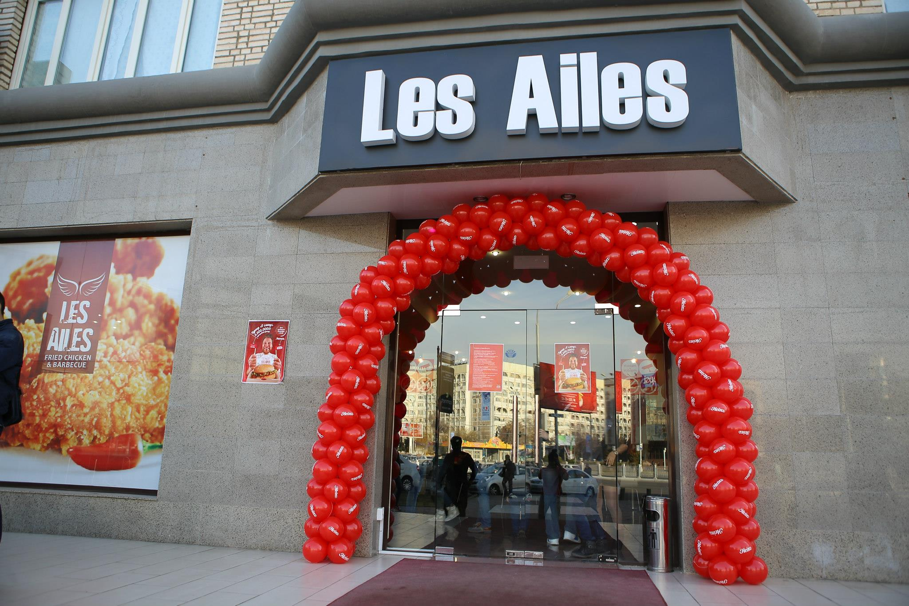

About
Les Ailes is familiar to every fried chicken fan. Over the two years of its existence, the brand has not only gained recognition, but has grown into a network with its own call-center, delivery service and a bureau for developing new recipes.
But, let's talk about everything in order.Les Ailes is a brand created in Uzbekistan, which is a network of fast-food cafes with dishes based on chicken meat. The network includes three establishments located in the city center - a spacious cafe on the Oybek metro station, a bright cafe with a bright playground on the street. Mahatma Gandhi (landmark - RSMAL named after Uspensky) and at the food court of the Samarqand Darvoza shopping center.
What is fed?
In the menu you will find sharp and original wings in breadcrumbs, a variety of burgers (classic, with cheese, a large, signature title, with onion rings breaded, spicy and others), twisters (from classic, with Caesar to burrito), breaded chicken, snacks, salads, as well as a set menu. Here they did not forget about the youngest guests, offering them convenient boxes in which children will find a mini-burger, potatoes, juice and a toy.
All Les Ailes dishes are made with top-quality local products, and the spices used are exclusively of natural origin. Chicken enters the kitchen chilled, which means that the meat retains freshness, all the beneficial properties and natural taste. Oil for frying - own development. Burger buns are baked here according to their own recipe.
In the bar menu, in addition to classic soft drinks and juices, there are aisti and home-made mojito.
Everything for children
Particular attention at Les Ailes is given to younger guests. In addition to a specially designed set menu, staff carefully monitors cleanliness as well as comfort on the playground. The furniture is arranged in such a way that even if your child decides to run in the excitement of the game, the likelihood of injuries is minimized.
Today to hear the phrase "Children are our future!" can be from a person of any age. Of course, we were all children, and then grew up as adults who already have their own children. For each and every one of us, children are the embodiment and realization of our parental unfulfilled desires and hopes. Parents want to raise their child so that he is more successful in their life than themselves.